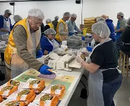
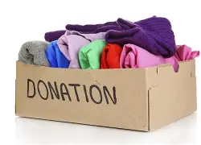

Our Programs
At Helping Hands Foundation, our programs are designed to address the most pressing needs of vulnerable communities in South Africa. Each initiative is a step towards our vision of a country where every family has dignity and access to the necessities of life.
Food Outreach
Our Food Outreach program ensures that no one goes hungry. We work with local farms and food banks to collect and distribute nutritious food parcels to impoverished families on a weekly basis.
- Distributing over 1,000 food parcels monthly.
- Working with community kitchens to provide warm meals.
- Conducting nutritional workshops to promote healthy eating.
Clothing Drives
Through our Clothing Drives, we provide dignity and comfort to those in need. We collect new and gently used clothing for all ages, with special distributions during the cold winter months to provide warmth and protection.
- Collecting and sorting donations from the public.
- Partnering with shelters to identify needs.
- Organizing seasonal distribution events.
Education Support

We believe that education is the key to a brighter future. This program focuses on providing students with the resources they need to succeed, including school supplies, books, and mentorship opportunities.
- Distributing stationery and textbooks to schools.
- Offering after-school tutoring programs.
- Providing scholarships for high-achieving students.